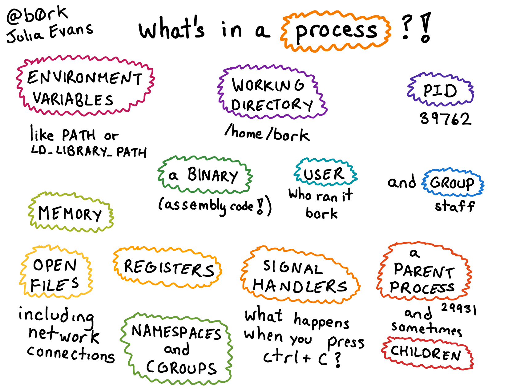
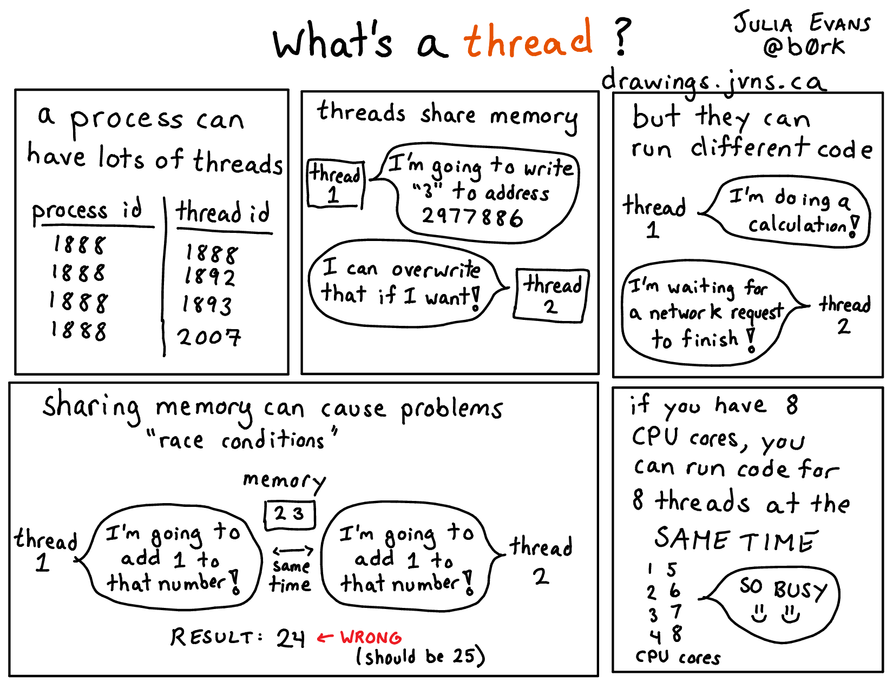

Deadline: End of lab Wednesday, August 5
#pragma omp for could be implemented. Learn about false sharing.Pull the Lab 10 files from the lab starter repository with
git pull starter master
OpenMP stands for Open specification for Multi-Processing. It is a framework that offers a C interface. It is not a built-in part of the language – most OpenMP features are directives to the compiler.
Benefits of multi-threaded programming using OpenMP include:
Very simple interface allows a programmer to separate a program into serial regions and parallel regions.
Convenient synchronization control (data race bugs in POSIX threads are very hard to trace).
In this lab, we will practice some basic usage of OpenMP. Feel free to build and use OpenMP on your own machine, but it would be the easiest to work on hive machines as they have OpenMP built and ready for use.
Consider the implementation of Hello World (hello.c):
int main() {
#pragma omp parallel
{
int thread_ID = omp_get_thread_num();
printf(" hello world %d\n", thread_ID);
}
}
This program will fork off the default number of threads and each thread will print out “hello world” in addition to which thread number it is. You can change the number of OpenMP threads by setting the environment variable OMP_NUM_THREADS or by using the omp_set_num_threads function in your program. The #pragma tells the compiler that the rest of the line is a directive, and in this case it is omp parallel. omp declares that it is for OpenMP and parallel says the following code block (what is contained in { }) can be executed in parallel. Give it a try:
` make hello && ./hello `
If you run ./hello a couple of times, you should see that the numbers are not always in numerical order and will most likely vary across runs. This is because within the parallel region, OpenMP does the code in parallel and as a result does not enforce an ordering across all the threads. It is also vital to note that the variable thread_ID is local to a specific thread and not shared across all threads. In general with OpenMP, variables declared inside the parallel block will be private to each thread, but variables declared outside will be global and accessible by all the threads.
Vector addition is a naturally parallel computation, so it makes for a good first exercise. The v_add function inside v_add.c will return the array that is the cell-by-cell addition of its inputs x and y. A first attempt at this might look like:
void v_add(double* x, double* y, double* z) {
#pragma omp parallel
{
for(int i=0; i<ARRAY_SIZE; i++)
z[i] = x[i] + y[i];
}
}
You can run this (make v_add followed by ./v_add) and the testing framework will vary the number of threads and time it. You will see that this actually seems to do worse as we increase the number of threads. The issue is that each thread is executing all of the code within the omp parallel block, meaning if we have 8 threads, we will actually be adding the vectors 8 times.
Rather than have each thread run the entire for loop, we need to split up the for loop across all the threads so each thread does only a portion of the work.
Your task is to optimize v_add.c (speedup may plateau as the number of threads continues to increase). To aid you in this process, two useful OpenMP functions are:
int omp_get_num_threads();int omp_get_thread_num();The function omp_get_num_threads() will return how many threads there are in a omp parallel block, and omp_get_thread_num() will return the thread ID.
Divide up the work for each thread through two different methods (write different code for each of these methods):
i such that i % omp_get_num_threads() is 0, Thread 1 will add the elements where i % omp_get_num_threads() is 1, etc.Hints:
v_add_optimized_chunks. Don’t be afraid to write one.For this exercise, we are asking you to manually split the work amongst threads since this is a common pattern used in software optimization. The designers of OpenMP actually made the #pragma omp for directive to automatically split up independent work. Here is the function rewritten using it. You may NOT use this directive in your solution to this exercise.
void v_add(double* x, double* y, double* z) {
#pragma omp parallel for
for(int i=0; i<ARRAY_SIZE; i++)
z[i] = x[i] + y[i];
}
Test the performance of your code with make v_add && ./v_add
The next task is to compute the dot product of two vectors. At first glance, implementing this might seem not too different from v_add, but the challenge is how to sum up all of the products into the same variable (reduction). A sloppy handling of reduction may lead to data races: all the threads are trying to read and write to the same address simultaneously. One solution is to use a critical section. The code in a critical section can only be executed by a single thread at any given time. Thus, having a critical section naturally prevents multiple threads from reading and writing to the same data, a problem that would otherwise lead to data races. One way to avoid data races is to use the critical primitive provided by OpenMP. An implementation, dotp_naive in omp_apps.c, protects the sum with a critical section.
Try out the code (make dotp &&./dotp). Notice how the performance gets much worse as the number of threads goes up? By putting all of the work of reduction in a critical section, we have flattened the parallelism and made it so only one thread can do useful work at a time (not exactly the idea behind thread-level parallelism). This contention is problematic; each thread is constantly fighting for the critical section and only one is making any progress at any given time. As the number of threads goes up, so does the contention, and the performance pays the price. Can we reduce the number of times that each thread needs to use a critical section?
Tasks:
reduction keyword in dotp_manual_optimized. Remember that we want to reduce the number of times each thread enters the critical section.reduction keyword in dotp_reduction_optimized.(Note that your code should no longer contain #pragma omp critical.)You might also find the TLP question in Discussion 13 helpful.
Run your code to examine the performance. The test for dotp only prints the results for all three implementations at the very end, so you might need to wait for a while before the results show up on the terminal.
OpenMP is a convenient way to do multi-threading computation. Another common task level parallelism approach is multiprocessing. A thread is a single execution sequence that can be managed independently by the operating system. A process is an instance of a computer program that is being executed. It consists of an address space and one or more threads of control. It is the main abstraction for protection provided by the operating system kernel.
The key differences between multi-threading and multiprocessing is that in multi-threading, threads share the same address space, whereas in multiprocessing, each process has its own address space. Performance wise, this difference leads to two observations:
 
(credit to Julia Evans)
In the second part of this lab, we will have a very basic but fun practice on writing multi-processing programs.
The fork syscall is used to create a new process by duplicating the calling process. If everything works fine, calling fork should return the process ID of the child process being created to the calling process, and 0 to the newly created process (which is usually refered to as the child process). A negative value is returned if the creation of a child process failed. Read more.
For example, the following code:
#include <stdio.h>
#include <sys/types.h>
#include <unistd.h>
int main () {
pid_t child_pid;
printf("Main process id = %d (parent PID = %d)\n",
(int) getpid(), (int) getppid());
child_pid = fork();
if (child_pid != 0)
printf("Parent: child's process id = %d\n", child_pid);
else
printf("Child: my process id = %d\n", (int) getpid());
return 0;
}
may output:
Main process id = 9075 (parent PID = 32146)
Parent: child's process id = 9076
Child: my process id = 9076
Calling fork() creates a child process. It might come as a surprise to you that this function returns to both the parent and the child process - the parent process gets the process ID of the child process being created, while 0 is returned to the child process. Thus, the parent and child processes diverge at the if block.
Make sure you understand this code snippet before proceeding.
The program that we want you to parallelize is a basic HTTP web server. A web server creates a listening socket and binds it to a port, then waits for a client to connect to the port. Once a connection reqeust reaches, the server obtains a new connection socket, reads in and parses the HTTP request, then responds to the request by serving the requested file. For simplicity, the server program that we will be working with only reponds to “GET” requests.
A serial version is already implemented for you. To start, run make server_basic && ./server_basic from the command line.
This server program will run locally using lab10/files/ as the serve file directory, and listen to port 8000 by default (this can be changed using a command line argument, for example, ./server_basic --port 8080). There are two ways to make a request: either open a browser and navigate to localhost:8000/[request filename] or use the curl program: run curl localhost:8000/[request filename] from the command line. (Type man curl for more usage of curl.)
For our purpose here, the details of the server implementation can largely be ignored, but the function server_forever defined in server_utils.c needs your optimization. In this current implementation, the server program operates on a single process. Once the main process gets a request, it will work on serving the request before coming back to greet the next request. Therefore, if serving one request takes more than a blink – best luck on clients who need to be served later.
If the requested filename refers to a directory, the server first looks for the presence of an index.html file. If that is found, that webpage will be served. Otherwise it will present links to each file under the requested directory.
This server also offers two twists:
localhost:8000/report, it will run the dotp program and serve the result in text. The arr_size parameter has a default value set in omp_apps.c, but you can change it from the command line: ./server_basic --dotp-size 10000000./filter/[filename].bmp, it will run a very simple image processing program (specifially, the sobel edge detector on the requested image, and return a html web page that display the original image and the filtered image together. A few sample bmp images are provided under files directory.
For example, navigating to localhost:8000/girl.bmp should get the original picture, but if you navigate to localhost:8000/filter/girl.bmp, your browser should render the following:If you do this exercise on a hive machine using ssh and want to make client requests using your local browser (sadly we can’t just go to Soda Hall these days…), say you ssh to [login]@hive9.cs.berkeley.edu and start the server using default setup (server listening to 127.0.0.1:8000), you can reqeust from browser using url http://hive9.cs.berkeley.edu:8000/.
And, of course, you can also use curl from the command line.
The bmp library we use here is very basic. It lacks many relatively complicated padding features necessary to work with images of any sizes. In fact, the filter algorithm will only work nicely on bmp images that have dimensions of powers of 2. Don’t be too surprised at seeing funky results if you try other image sources.
Optional:
(Feel free to implement other image processing algorithms and play with the server any way you like. :)
To simulate a costly computation, the request handler is made to wait 5 seconds after it finishes serving the requested file. You can easily observe this inefficiency by making two consecutive requests – the second one will halt for a while before getting a response.
Can we improve the server with some parallelism?
Instead of serving a request with the main process running the server program, always fork a new child process to do that and let the parent process continue to greet new requests.
The fork mechanics demonstrated in the sample code above should be adequate to help you finish the implementation.
The created child process has its own set of system resources (address space, registers, a stack, open handles to system objects, security context, etc).
You need to explicitly clean up and recycle upon finishing the computation task.
Take a look at the exit syscall.
To test your optimization, run make server_process && ./server_process, then make two consecutive requests to any file, verify that the second request is immediately served.
We provide a simple timer script, timer.py, to automate this process.
Run the compiled and linked server binary (either server_basic or server_process, then run python3 timer.py in another terminal. The script would report the amount of time it takes to serve the requested files.
The performance gain of the forking implementation should be very impressive.
Note: Forked child processes are not guaranteed to be killed when you kill the parent process from command line by hitting Ctrl+C.
This may lead to a side effect that the default port 8000 is occupied and you won’t be able to restart your server program listening to the same port.
The way to do it properly is out of scope for the purpose of 61c, so we have implemented this for you in the starter code. (You will learn to resolve issues like such in cs162, but you’re encouraged to figure out what the starter code actually does on your own).
We provide a work around here: If a port you attempt to use is occupied by a zombie process, you can kill it using command fuser -k [port#]/tcp.
Another work around is to use a different port number by passing in a command line argument, for example, ./server_process --port 8080.
To test your optimization, run make server_process && ./server_process, then make two consecutive requests to any file. Verify that the second request is immediately served.
(FYI: forking a process to respond to a request is probably not the best parallelism approach – the modern solution is to use a thread pool where the overhead is much lower and you have convenient control over server load.)
v_add that manually splits up the work. Remember, you should not have used #pragma omp for here.dotp.c that gets speedup over the single threaded case.dotp.c, and explain the difference in performance.Start the naive server with ./server_basic, meanwhile in another terminal, run python timer.py.
It should take over 10 seconds.
Then do the same for your multiprocessing implementation, server_process.
Show that the timer script reports less than 0.1 seconds.